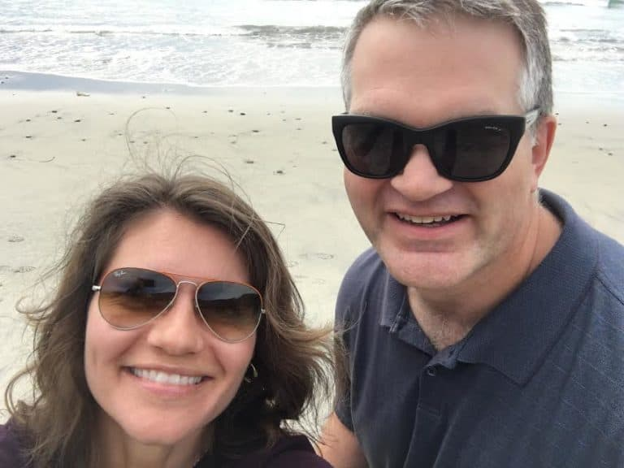
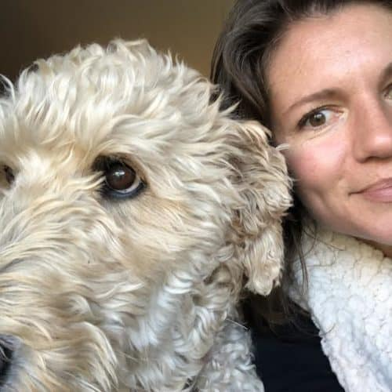

Member Spotlight: Caroline Starr Rose
By Harris Goldstein | July 9, 2020
This edition of our Member Spotlight features Walk-A-Wish member Caroline Starr Rose! Caroline, an accomplished children’s author who hails from Albuquerque, New Mexico, has logged over 1000 miles to date! Check it out!
Caroline’s story begins seven years ago when her husband was diagnosed with an unfortunate medical condition. “In 2012, my husband, Dan, was diagnosed with early onset Parkinson’s disease a few weeks before his 39th birthday. He lives with his condition with dignity (and dashes of humor!) and has been a true role model for me.”
“Dan and I take a gym class together three times a week. In the spring of 2018, a gym friend shared she’d recently signed up through an app to support a friend with Parkinson’s. It was Walk-A-Wish. As soon as I got home, I downloaded the app and started tracking my miles.”
“I run six to eight miles a week and walk my dog, Boo, a few miles everyday. Slowly but surely I’ve put in over a 1000 miles. It’s fun to think Miss Boo is doing her part for Parkinson’s research! Unsurprisingly, Caroline logs miles in support of The Michael J. Fox Foundation for Parkinson’s Research.
 While Caroline enjoys running nowadays, this wasn’t always the case. “Most of my life, I thought runners were like chemistry majors — skilled in a way I wasn’t and fans of pain and tedium. This all changed after my second son was born, when my walking partner turned to me and said, “We’re running the next mile. Go!” For weeks, we steadily built our distance. Somehow, I got hooked.”
When asked what she loves about running Caroline responded, “I love the simplicity of running, the steady, familiar rhythm that feels like an old friend. Outside of a good pair of shoes, it's a sport that doesn't require any gear. I can run alone or with a partner, can compete against myself or others or not worry about my speed at all.”
“I’ve never been fast, and as I’ve gotten older I'm slower still (barring the year I turned forty and had a handful of PRs – that was great!). But a wise friend once told me slow miles are better than no miles. I hope I'm still going forty years from now.”
“I use Walk-A-Wish because it impacts my family directly. When a loved one has an incurable disease, it is easy to feel like your hands are tied. What tangible things can you do that really make a difference? Knowing my everyday activities earn money for Parkinson’s research means every mile I cover is infused with double purpose — first for my own health and second for the health of others.”
 “I love the number of charities there are to choose from. Chances are everyone can find a charity from the list that is personally significant. I talk up Walk-A-Wish whenever I get the chance and wear my Walk-A-Wish shirt proudly.”
In regard to her career as an author Caroline stated, “I write middle grade novels (books for upper elementary and middle school kids) and picture books. It's the most amazing job in the world. Like running, writing is a one- step-after-the-next process. It can be full of setbacks and wrong turns. But just like familiar rhythms of a run, there's a deep satisfaction in returning to a manuscript and digger deeper, going wider until the words on the page sing.
Good luck with your next 1000 miles Caroline! We wish you and your husband all the best going forward!
You can follow Caroline on Twitter @CStarrRose on and you can check out her website https://carolinestarrrose.com/